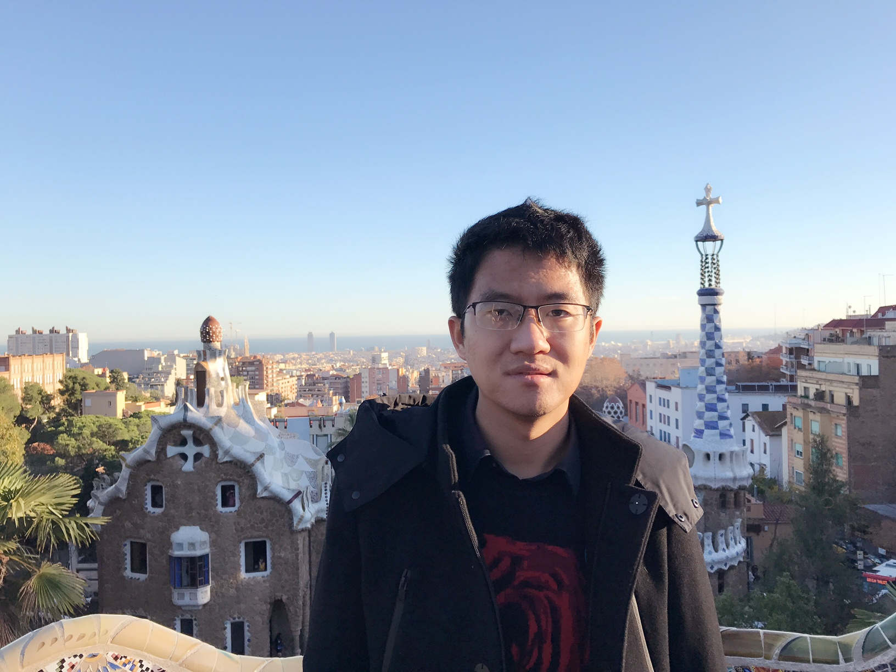

(代季峰)
Associate Professor, Department of Electronic Engineering, Tsinghua University
Adjunct Leading Scientist, Shanghai AI Laboratory
Email: daijifeng -at- tsinghua.edu.cn
Group Webpage: https://fundamentalvision.github.io/
Github: https://github.com/fundamentalvision https://github.com/OpenGVLab https://github.com/msracver https://github.com/daijifeng001

My lab at Tsinghua University is now hiring. If you are interested in internship, Ph.D. program, postdoctoral positions related to computer vision or deep learning, please send me an email.
If you are intested in internship or job position at Shanghai AI Laboratory related to my research field, please send me an email as well.
Please try InternVL, a leading open-source multi-modal foundation model
InternImage ranks 10th of the most influential papers in CVPR 2023
UniAD won the Best Paper Award of CVPR 2023
BEVFormer ranks 6th of the most influential papers in ECCV 2022
Deformable DETR ranks 2nd of the most influential papers in ICLR 2021
VL-BERT ranks 7th of the most influential papers in ICLR 2020
Deformable ConvNets ranks 6th of the most influential papers in ICCV 2017
R-FCN ranks 3rd of the most influential papers in NIPS 2016
Currently, I am an Associate Professor at Department of Electronic Engineering of Tsinghua University. My current research focus is on learning intelligent models from visual data for understanding the complex world.
Prior to that, I was an Executive Research Director at SenseTime Research, headed by Professor Xiaogang Wang, between 2019 and 2022. I was a Principal Research Manager in Visual Computing Group at Microsoft Research Asia (MSRA) between 2014 and 2019, headed by Dr. Jian Sun.
I got my Ph.D. degree from the Department of Automation, Tsinghua University in 2014, under the supervison of Professor Jie Zhou. During my Ph.D. study, I visited the VCLA lab of University of California, Los Angeles (UCLA) between 2012 and 2013, where I worked with Professor Song-Chun Zhu and Professor Ying-Nian Wu. Before that, I got my B.S. degree from the Department of Automation, Tsinghua University in 2009, GPA ranking 2/160+.
(* Interns & Students, + Equal contribution)
BEVFormer: Learning Bird's-Eye-View Representation From LiDAR-Camera Via Spatiotemporal Transformers
Zhiqi Li*+, Wenhai Wang+, Hongyang Li+, Enze Xie, Chonghao Sima, Tong Lu, Qiao Yu, Jifeng Dai
TPAMI 2025.
Demystify Transformers & Convolutions in Modern Image Deep Networks
Xiaowei Hu+, Min Shi*+, Weiyun Wang*+, Sitong Wu*+, Linjie Xing, Wenhai Wang, Xizhou Zhu, Lewei Lu, Jie Zhou, Xiaogang Wang, Yu Qiao, Jifeng Dai
TPAMI 2025.
SynerGen-VL: Towards Synergistic Image Understanding and Generation with Vision Experts and Token Folding
Hao Li*+, Changyao Tian*+, Jie Shao*+, Xizhou Zhu+, Zhaokai Wang, Jinguo Zhu, Wenhan Dou, Xiaogang Wang, Hongsheng Li, Lewei Lu, Jifeng Dai
CVPR 2025.
PVC: Progressive Visual Token Compression for Unified Image and Video Processing in Large Vision-Language Models
Chenyu Yang*+, Xuan Dong*+, Xizhou Zhu+, Weijie Su+, Jiahao Wang, Hao Tian, Zhe Chen, Wenhai Wang, Lewei Lu, Jifeng Dai
CVPR 2025.
HoVLE: Unleashing the Power of Monolithic Vision-Language Models with Holistic Vision-Language Embedding
Chenxin Tao*+, Shiqian Su*+, Xizhou Zhu+, Chenyu Zhang, Zhe Chen, Jiawen Liu, Wenhai Wang, Lewei Lu, Gao Huang, Yu Qiao, Jifeng Dai
CVPR 2025.
VisionLLM v2: An End-to-End Generalist Multimodal Large Language Model for Hundreds of Vision-Language Tasks
Jiannan Wu*+, Muyan Zhong*+, Sen Xing*+, Zeqiang Lai*+, Zhaoyang Liu*+, Wenhai Wang+, Zhe Chen, Xizhou Zhu, Lewei Lu, Tong Lu, Ping Luo, Yu Qiao, Jifeng Dai
NeurIPS 2024.
OmniCorpus: An Unified Multimodal Corpus of 10 Billion-Level Images Interleaved with Text
Qingyun Li*+, Zhe Chen*+, Weiyun Wang*+, Wenhai Wang+, Shenglong Ye*+, Zhenjiang Jin*+, Guanzhou Chen*+, Yinan He+, Zhangwei Gao*+, Erfei Cui*+, Jiashuo Yu*+, Hao Tian+, Jiasheng Zhou+, Chao Xu+, Bin Wang+, Xingjian Wei+, Wei Li+, Wenjian Zhang+, Bo Zhang+, Pinlong Cai+, Licheng Wen+, Xiangchao Yan+, Pei Chu+, Yi Wang+, Min Dou, Changyao Tian, Xizhou Zhu, Lewei Lu, Yushi Chen, Junjun He, Tong Lu, Yali Wang, Limin Wang, Dahua Lin, Yu Qiao, Botian Shi, Conghui He, Jifeng Dai
ICLR 2025.
Vision Model Pre-training on Interleaved Image-Text Data via Latent Compression Learning
Chenyu Yang*+, Xizhou Zhu+, Jinguo Zhu*+, Weijie Su, Junjie Wang, Xuan Dong, Wenhai Wang, Lewei Lu, Bin Li, Jie Zhou, Yu Qiao, Jifeng Dai
NeurIPS 2024.
Learning 1D Causal Visual Representation with De-focus Attention Networks
Chenxin Tao*+, Xizhou Zhu+, Shiqian Su*+, Lewei Lu, Changyao Tian, Xuan Luo, Gao Huang, Hongsheng Li, Yu Qiao, Jie Zhou, Jifeng Dai
NeurIPS 2024.
Parameter-Inverted Image Pyramid Networks
Xizhou Zhu+, Xue Yang+, Zhaokai Wang*+, Hao Li, Wenhan Dou, Junqi Ge, Lewei Lu, Yu Qiao, Jifeng Dai
NeurIPS 2024. (Spotlight)
The All-Seeing Project V2: Towards General Relation Comprehension of the Open World
Weiyun Wang*, Yiming Ren*, Haowen Luo*, Tiantong Li*, Chenxiang Yan*, Zhe Chen*, Wenhai Wang, Qingyun Li*, Lewei Lu, Xizhou Zhu, Yu Qiao, Jifeng Dai
ECCV 2024.
ControlLLM: Augment Language Models with Tools by Searching on Graphs
Zhaoyang Liu*+, Zeqiang Lai*+, Zhangwei Gao, Erfei Cui, Ziheng Li, Xizhou Zhu, Lewei Lu, Qifeng Chen, Yu Qiao, Jifeng Dai, Wenhai Wang
ECCV 2024.
Efficient Deformable ConvNets: Rethinking Dynamic and Sparse Operator for Vision Applications
Yuwen Xiong*+, Zhiqi Li*+, Yuntao Chen+, Feng Wang*+, Xizhou Zhu, Jiapeng Luo, Wenhai Wang, Tong Lu, Hongsheng Li, Yu Qiao, Lewei Lu, Jie Zhou, Jifeng Dai
CVPR 2024. (Highlight)
MM-Interleaved: Interleaved Image-Text Generative Modeling via Multi-modal Feature Synchronizer
Changyao Tian*+, Xizhou Zhu+, Yuwen Xiong*+, Weiyun Wang*, Zhe Chen*, Wenhai Wang, Yuntao Chen, Lewei Lu, Tong Lu, Jie Zhou, Hongsheng Li, Yu Qiao, Jifeng Dai
Arxiv Tech Report, 2024.
InternVL: Scaling up Vision Foundation Models and Aligning for Generic Visual-Linguistic Tasks
Zhe Chen*, Jiannan Wu*, Wenhai Wang, Weijie Su*, Guo Chen, Sen Xing*, Zhong Muyan*, Qinglong Zhang, Xizhou Zhu, Lewei Lu, Bin Li, Ping Luo, Tong Lu, Yu Qiao, Jifeng Dai
CVPR 2024. (Oral)
DriveMLM: Aligning Multi-Modal Large Language Models with Behavioral Planning States for Autonomous Driving
Wenhai Wang+, Jiangwei Xie+, ChuanYang Hu+, Haoming Zou+, Jianan Fan+, Wenwen Tong+, Yang Wen+, Silei Wu+, Hanming Deng+, Zhiqi Li+, Hao Tian, Lewei Lu, Xizhou Zhu, Xiaogang Wang, Yu Qiao, Jifeng Dai
Arxiv Tech Report, 2023.
Auto MC-Reward: Automated Dense Reward Design with Large Language Models for Minecraft
Hao Li+, Xue Yang+, Zhaokai Wang+, Xizhou Zhu, Jie Zhou, Yu Qiao, Xiaogang Wang, Hongsheng Li, Lewei Lu, Jifeng Dai
CVPR 2024.
The All-Seeing Project: Towards Panoptic Visual Recognition and Understanding of the Open World
Weiyun Wang*+, Min Shi*+, Qingyun Li*+, Wenhai Wang+, Zhenhang Huang+, Linjie Xing+, Zhe Chen, Hao Li, Xizhou Zhu, Zhiguo Cao, Yushi Chen, Tong Lu, Jifeng Dai, Yu Qiao
ICLR 2024.
Ghost in the Minecraft: Generally Capable Agents for Open-World Enviroments via Large Language Models with Text-based Knowledge and Memory
Xizhou Zhu+, Yuntao Chen+, Hao Tian+, Chenxin Tao*+, Weijie Su*+, Chenyu Yang*+, Gao Huang, Bin Li, Lewei Lu, Xiaogang Wang, Yu Qiao, Zhaoxiang Zhang, Jifeng Dai
Arxiv Tech Report, 2023.
VisionLLM: Large Language Model is also an Open-Ended Decoder for Vision-Centric Tasks
Wenhai Wang+, Zhe Chen*+, Xiaokang Chen*+, Jiannan Wu*+, Xizhou Zhu, Gang Zeng, Ping Luo, Tong Lu, Jie Zhou, Yu Qiao, Jifeng Dai
NeurIPS 2023.
Planning-oriented Autonomous Driving
Yihan Hu+, Jiazhi Yang+, Li Chen+, Keyu Li, Chonghao Sima, Xizhou Zhu, Siqi Chai, Senyao Du, Tianwei Lin, Wenhai Wang, Lewei Lu, Xiaosong Jia, Qiang Liu, Jifeng Dai, Yu Qiao, Hongyang Li
CVPR 2023. (CVPR Best Paper Award)
BEVFormer v2: Adapting Modern Image Backbones to Bird's-Eye-View Recognition via Perspective Supervision
Chenyu Yang*+, Yuntao Chen+, Hao Tian+, Chenxin Tao*, Xizhou Zhu, Zhaoxiang Zhang, Gao Huang, Hongyang Li, Yu Qiao, Lewei Lu, Jie Zhou, Jifeng Dai
CVPR 2023. (Highlight)
Towards All-in-one Pre-training via Maximizing Multi-modal Mutual Information
Weijie Su*+, Xizhou Zhu+, Chenxin Tao*+, Lewei Lu, Bin Li, Gao Huang, Yu Qiao, Xiaogang Wang, Jie Zhou, Jifeng Dai
CVPR 2023. (Highlight)
Uni-Perceiver v2: A Generalist Model for Large-Scale Vision and Vision-Language Tasks
Hao Li*+, Jingguo Zhu*+, Xiaohu Jiang*+, Xizhou Zhu, Hongsheng Li, Chun Yuan, Xiaohua Wang, Yu Qiao, Xiaogang Wang, Wenhai Wang, Jifeng Dai
CVPR 2023. (Highlight)
InternImage: Exploring Large-Scale Vision Foundation Models with Deformable Convolutions
Wenhai Wang+, Jifeng Dai+, Zhe Chen*+, Zhenhang Huang+, Zhiqi Li*+, Xizhou Zhu+, Xiaowei Hu, Tong Lu, Lewei Lu, Hongsheng Li, Xiaogang Wang, Yu Qiao
CVPR 2023. (Highlight)
Siamese Image Modeling for Self-Supervised Vision Representation Learning
Chenxin Tao*+, Xizhou Zhu+, Gao Huang, Yu Qiao, Xiaogang Wang, Jifeng Dai
CVPR 2023. (Highlight)
Uni-Perceiver-MoE: Learning Sparse Generalist Models with Conditional MoEs
Jingguo Zhu*+, Xizhou Zhu+, Wenhai Wang, Xiaohua Wang, Hongsheng Li, Xiaogang Wang, Jifeng Dai
NeurIPS, 2022.
BEVFormer: Learning Bird's-Eye-View Representation from Multi-Camera Images via Spatiotemporal Transformers
Zhiqi Li*+, Wenhai Wang+, Hongyang Li+, Enze Xie, Chonghao Sima, Tong Lu, Qiao Yu, Jifeng Dai
ECCV 2022.
Code is available!
BEVFormer won the 1-st place of Waymo 2022 3D Camera-Only Detection Task
VL-LTR: Learning Class-wise Visual-Linguistic Representation for Long-Tailed Visual Recognition
Changyao Tian*+, Wenhai Wang+, Xizhou Zhu+, Xiaogang Wang, Jifeng Dai, Yu Qiao
ECCV 2022.
Exploring the Equivalence of Siamese Self-Supervised Learning via A Unified Gradient Framework
Chenxin Tao*+, Honghui Wang*+, Xizhou Zhu+, Jiahua Dong, Shiji Song, Gao Huang, Jifeng Dai
CVPR 2022.
Uni-Perceiver: Pre-training Unified Architecture for Generic Perception for Zero-shot and Few-shot Tasks
Xizhou Zhu+, Jinguo Zhu*+, Hao Li*+, Xiaoshi Wu*+, Xiaogang Wang, Hongsheng Li, Xiaohua Wang, Jifeng Dai
CVPR 2022.
AutoLoss-Zero: Searching Loss Functions from Scratch for Generic Tasks
Hao Li*+, Tianwen Fu*+, Jifeng Dai ,Hongsheng Li, Gao Huang, and Xizhou Zhu
CVPR 2022.
Searching Parameterized AP Loss for Object Detection
Chenxin Tao*+, Zizhang Li*+, Xizhou Zhu+, Gao Huang, Yong Liu, Jifeng Dai
NeurIPS 2021.
Unsupervised Object Detection with LiDAR Clues
Hao Tian*+, Yuntao Chen*+, Jifeng Dai , Zhaoxiang Zhang, and Xizhou Zhu
IEEE Conference on Computer Vision and Pattern Recognition (CVPR), 2021.
Auto Seg-Loss: Searching Metric Surrogates for Semantic Segmentation
Hao Li*+, Chenxin Tao*+, Xizhou Zhu, Xiaogang Wang, Gao Huang, and Jifeng Dai
International Conference on Learning Representations (ICLR), 2021.
Code is available!
Deformable DETR: Deformable Transformers for End-to-End Object Detection
Xizhou Zhu+, Weijie Su*+, Lewei Lu, Bin Li, Xiaogang Wang, and Jifeng Dai
International Conference on Learning Representations (ICLR), 2021.(Oral)
Code is available!
Deformable Kernels: Adapting Effective Receptive Fields for Object Deformation
Hang Gao*+, Xizhou Zhu*+, Steve Lin, and Jifeng Dai
International Conference on Learning Representations (ICLR), 2020.
VL-BERT: Pre-training of Generic Visual-Linguistic Representations
Weijie Su*+, Xizhou Zhu*+, Yue Cao, Bin Li, Lewei Lu, Furu Wei, and Jifeng Dai
International Conference on Learning Representations (ICLR), 2020.
Code is available!
An Empirical Study of Spatial Attention Mechanisms in Deep Networks
Xizhou Zhu*+, Dazhi Cheng*+, Zheng Zhang+, Steve Lin, and Jifeng Dai
International Conference on Computer Vision (ICCV), 2019.
Deformable ConvNets v2: More Deformable, Better Results
Xizhou Zhu*, Han Hu, Steve Lin, and Jifeng Dai
IEEE Conference on Computer Vision and Pattern Recognition (CVPR), 2019.
The updated operators utilized in Deformable ConvNets v2 are provided here!
Integrated Object Detection and Tracking with Tracklet-Conditioned Detection
Zheng Zhang+, Dazhi Cheng*+, Xizhou Zhu*+, Steve Lin, and Jifeng Dai
Arxiv Tech Report, 2018.
Towards High Performance Video Object Detection for Mobiles
Xizhou Zhu*, Jifeng Dai, Xingchi Zhu*, Yichen Wei, and Lu Yuan
Arxiv Tech Report, 2018.
Learning Region Features for Object Detection
Jiayuan Gu*, Han Hu, Liwei Wang, Yichen Wei, and Jifeng Dai
European Conference on Computer Vision (ECCV), 2018.
Relation Networks for Object Detection
Han Hu+, Jiayuan Gu*+, Zheng Zhang+, Jifeng Dai, and Yichen Wei
IEEE Conference on Computer Vision and Pattern Recognition (CVPR), 2018. (Oral)
Code is available!
Towards High Performance Video Object Detection
Xizhou Zhu*, Jifeng Dai, Lu Yuan, and Yichen Wei
IEEE Conference on Computer Vision and Pattern Recognition (CVPR), 2018. (Spotlight)
Deformable Convolutional Networks
Jifeng Dai+, Haozhi Qi*+, Yuwen Xiong*+, Yi Li*+, Guodong Zhang*+, Han Hu, and Yichen Wei
International Conference on Computer Vision (ICCV), 2017. (Oral)
Code is available!
Slides of ICCV Oral, COCO2017 workshop
Flow-Guided Feature Aggregation for Video Object Detection
Xizhou Zhu*, Yujie Wang*, Jifeng Dai, Lu Yuan, and Yichen Wei
International Conference on Computer Vision (ICCV), 2017.
Code is available!
Video
Fully Convolutional Instance-aware Semantic Segmentation
Yi Li*+, Haozhi Qi*+, Jifeng Dai, Xiangyang Ji, and Yichen Wei
IEEE Conference on Computer Vision and Pattern Recognition (CVPR), 2017. (Spotlight)
1-st place winner of the COCO 2016 segmentation challenge
0.24 sec/image test speed (using ResNet-101 net)
Code is available!
Deep Feature Flow for Video Recognition
Xizhou Zhu*, Yuwen Xiong*, Jifeng Dai, Lu Yuan, and Yichen Wei
IEEE Conference on Computer Vision and Pattern Recognition (CVPR), 2017.
Code is available!
Video
R-FCN: Object Detection via Region-based Fully Convolutional Networks
Jifeng Dai, Yi Li, Kaiming He, and Jian Sun
Neural Information Processing Systems (NIPS), 2016.
Code is available!
Instance-sensitive Fully Convolutional Networks
Jifeng Dai, Kaiming He, Yi Li, Shaoqing Ren, and Jian Sun
European Conference on Computer Vision (ECCV), 2016.
ScribbleSup: Scribble-Supervised Convolutional Networks for Semantic Segmentation
Di Lin*, Jifeng Dai, Jiaya Jia, Kaiming He, and Jian Sun
IEEE Conference on Computer Vision and Pattern Recognition (CVPR), 2016. (Oral)
PASCAL-scribble dataset is available here!
Instance-aware Semantic Segmentation via Multi-task Network Cascades
Jifeng Dai, Kaiming He, and Jian Sun
IEEE Conference on Computer Vision and Pattern Recognition (CVPR), 2016. (Oral)
1-st place winner of the COCO 2015 segmentation challenge
0.36 sec/image test speed (using VGG-16 net)
Code is available!
BoxSup: Exploiting Bounding Boxes to Supervise Convolutional Networks for Semantic Segmentation
Jifeng Dai, Kaiming He, and Jian Sun
International Conference on Computer Vision (ICCV), 2015.
Convolutional Feature Masking for Joint Object and Stuff Segmentation
Jifeng Dai, Kaiming He, and Jian Sun
IEEE Conference on Computer Vision and Pattern Recognition (CVPR), 2015.
Generative Modeling of Convolutional Neural Networks
Jifeng Dai, Yang Lu, and Ying-Nian Wu
International Conference on Learning Representations (ICLR), 2015.
project page
Unsupervised Learning of Dictionaries of Hierarchical Compositional Models
Jifeng Dai, Yi Hong, Wenze Hu, Song-Chun Zhu, and Ying-Nian Wu
IEEE Conference on Computer Vision and Pattern Recognition (CVPR), 2014.
project page
Cosegmentation and Cosketch by Unsupervised Learning
Jifeng Dai, Ying-Nian Wu, Jie Zhou, and Song-Chun Zhu
International Conference on Computer Vision (ICCV), 2013.
project page
Mining Sub-categories For Object Detection
Jifeng Dai, Jianjiang Feng, and Jie Zhou
International Conference on Pattern Recognition (ICPR), 2012. (Oral)
Ridge Based Palmprint Matching
Jifeng Dai, Jianjiang Feng, and Jie Zhou
IEEE Biometrics Council Newsletter, 7:4-5, 2013. (Invited paper)
Robust and Efficient Ridge-Based Palmprint Matching
Jifeng Dai, Jianjiang Feng, and Jie Zhou
IEEE Transactions on Pattern Analysis and Machine Intelligence (TPAMI), 34(8):1618–1632, 2012.
Multi-feature Based High-resolution Palmprint Recognition
Jifeng Dai, and Jie Zhou
IEEE Transactions on Pattern Analysis and Machine Intelligence (TPAMI), 33(5):945–957, 2011.
(Sorry if I missed someone.)